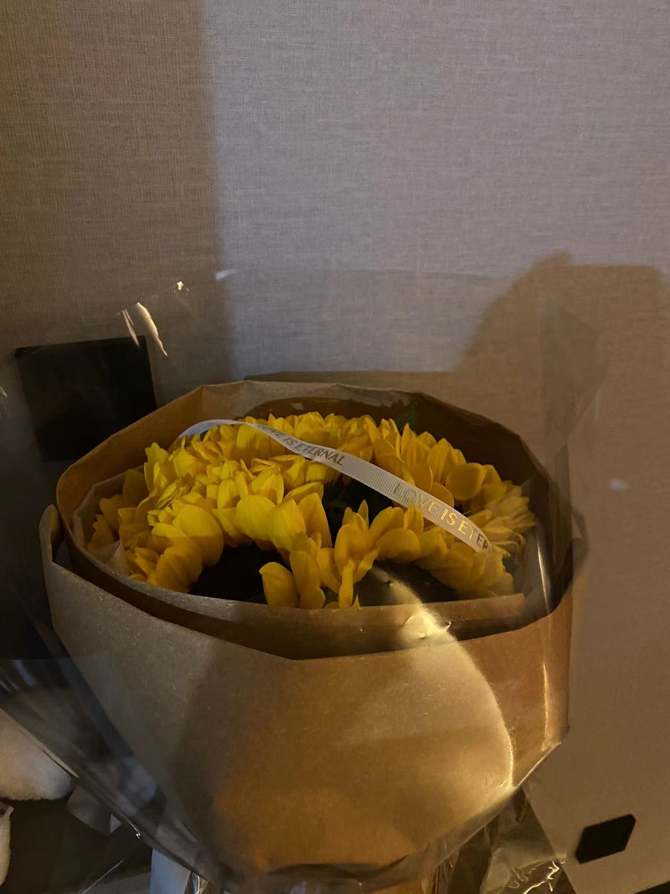
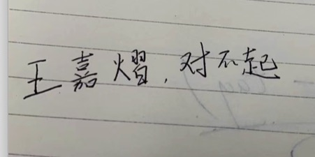
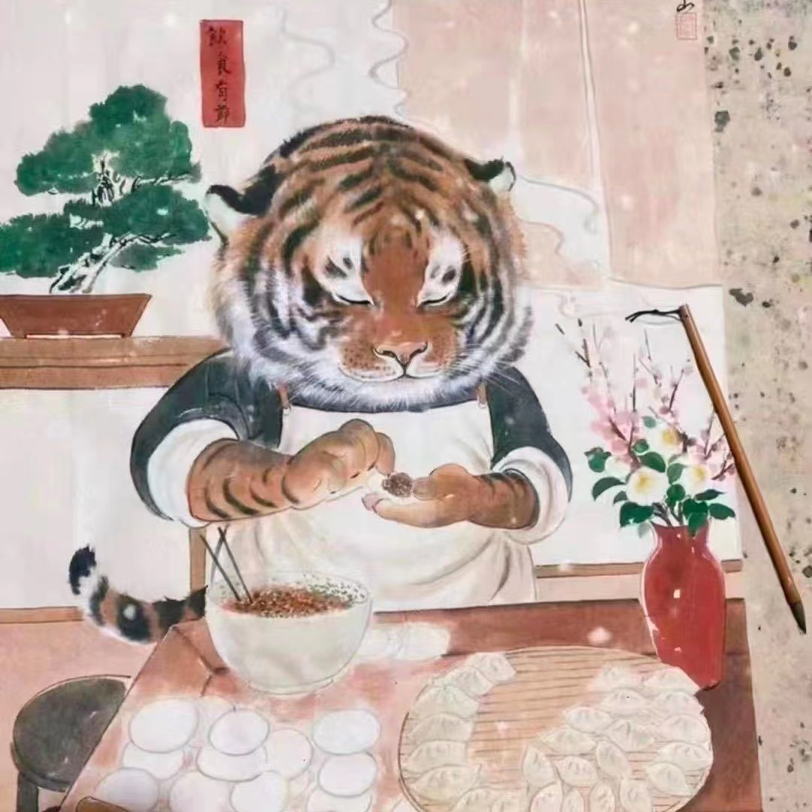

<!DOCTYPE html>
<html lang="en">
<head>
    <meta charset="UTF-8">
    <meta name="viewport"
          content="width=device-width; initial-scale=1.0; maximum-scale=1; user-scalable=no;viewport-fit=cover"/>
    <meta name="renderer" content="webkit|ie-comp|ie-stand"/>
    <script src="./assets/jquery.min.js"></script>
    <title>甜蜜日记</title>
</head>
<body>

</body>
<script>
    let logs = [
        {
            time: '2022-08-29 11:30:00 day4',
            lhz: '想给嘉熠讲一辈子的故事',
            wjy: '看心情吧'
        },
        {
            time: '2022-08-30 16:22:00 day5',
            lhz: '聊了许多关于婚后的一些憧憬',
            wjy: '阅',
        },
        {
            time: '2022-08-31 18:31:00 day6',
            lhz: ' <span style="text-decoration: line-through;color: #ff0000">关于王嘉熠是个大醋坛子这件事，我觉得 得好好纠正一下</span><br>发现王嘉熠新功能，猛钻<span>牛角尖</span>，钻进去还出不来的那种 <br>不管怎样，我都是<span style="color: #f53fb3;font-weight: 700">喜欢</span>你的，这点是不会变得。请对我的信任多一些好吗？',
            wjy: '知道啦知道啦 两只耳朵都听到啦！！！',
        },
        {
            time: '2022-09-01 09:06:00 day7',
            lhz: '谢谢你，王嘉熠，解开了我的心结。',
            wjy: '',
        },
        {
            time: '2022-09-02 12:44:00 day8',
            lhz: '外面的女人都是老虎，她们都会害我哒。只有嘉熠媳妇好，她才是跟我过日子哒。',
            wjy: '有一天你聚餐，你隔壁楼的醉酒单身女同事来搭顺风车….',
        },
        {
            time: '2022-09-05 14:19:00 day11',
            lhz: '备孕计划，启动！',
            wjy: ' 听我说：….',
        },
        {
            time: '2022-09-06 10:24:00 day12',
            lhz: '晚上的王嘉熠："不要挂语音嘛，你是不是烦我了，总是催我睡觉"；早上的王嘉熠："呜呜呜，困死了，都怪你昨晚上不挂语音" 我："！！！！"',
            wjy: '监督不力！！',
        },
        {
            time: '2022-09-07 17:49:00 day13',
            lhz: '王嘉熠也太可怜了吧，本以为不煲电话粥了，可以让她早睡一会，结果竟然被鼻炎折腾一晚上，摸摸头。<br>不怎么被搭理的一天，不知道为啥生气了。害。搞得我心里好难受。',
            wjy: '',
        },
        {
            wjy: '《震惊十个女生九个都会生气的踩雷话术》'
        },
        {
            time: '2022-09-08 22:09:00 day15',
            wjy: '喝醉了的王嘉熠：狗子，你可不可以喜欢我久一点',
        },
        {
            lhz: '那我希望是一辈子',
            wjy: '狗子，一辈子太长啦，我们先暂定30年吧',
        },
        {
            time: '2022-09-09 23:09:00 day15 奔现第一天',
            lhz: '我来济南找你啦，宝',
            wjy: '奔现啦，奔现啦，我带着鲜花来找你啦 <br> ',
        },
        {
            lhz: '人生第一次收到别人送的花，太感动了。谢谢你，我的王嘉熠。',
            wjy: '',
        },
        {
            time: '2022-09-10 23:25:00 day15 奔现第二天',
            lhz: '被某人榨干后，中秋节批斗大会开始啦。',
            wjy: '贤者模式王嘉熠：批斗的就是你！',
        },
        {
            lhz: '感谢宝陪了一整天，和王嘉熠度过的第一个中秋节，同时希望后面每个都和你在一起度过。撒花~',
            wjy: '爱你哦，老公',
        },
        {
            time: '2022-09-13 15:15:00 day18',
            lhz: '',
            wjy: '老公，如果这周我再生气 我就是小王八',
        },
        {
            time: '2022-09-14 17:26:00 day19',
            lhz: '格局小了，妹妹',
            wjy: '那以后我 做不对的地方 ，你给我生气   我是不是也可以给你说 你格局太小了，生气有什么好处？为什么要生气呢？'
        },
        {
            lhz: '是啊，我觉得 我情绪波动挺小的'
        },
        {
            time: '2022-09-15 22:15:00 day20',
            lhz: '咱就说这个装修，花钱的地方，阳台啊，空调啊，乱七八糟啊....',
            wjy: '嗯，是啊，嗯。对。唉，我玉米呢？我火把呢？'
        },
        {
            lhz: '什么玉米？你在吃玉米？我去，王嘉熠，你TM在跟我打电话的时候 还在羊了个羊！'
        },
        {
            time: '2022-09-17 17:23:00 day22',
            lhz: '再玩羊了个羊你就是小狗？',
            wjy: '我本来就是小狗了，再玩羊了个羊就罚款500吧'
        },
        {
            time: '2022-09-18 09:59:00 day23',
            lhz: '我只是想简单的画个饼',
        },
        {
            time: '2022-09-20 00:12:00 day25',
            wjy: '今天是920完美日，从开心的爱心早餐开始，到完美的和老朋友的聚会，到弟仁杰专门给我买的最喜欢的饮料，最后再到狗子的电话，全部是开心的一天(除了罚款500) <br>补充：顺便还有努力可能成为富婆的学习计划',
        },
        {
            lhz: '今天最开心的就是给媳妇儿买了早餐，还有自家媳妇知道赚钱养家了，泪目~ 最重要的是 媳妇开心'
        },
        {
            time: '2022-09-22 15:12:00 day27',
            lhz: '王嘉熠，你键盘是pdd 9.9包邮的吗，怎么这么难用',
            wjy: '狗子，我们公司要转型了，明天还要真人实操',
        },
        {
            lhz: '离职吧。别干了，底线是被慢慢击破的'
        },
        {
            wjy: '嘿嘿嘿，狗子，逗你的。'
        },
        {
            wjy: '狗子，你算算这些多少钱，我抢的红包。上交给你。',
        },
        {
            time: '<span class="red">2022-09-23 09:24:00 day28 姨妈第一天</span>',
            lhz: '李洪震是个双标狗。不让女朋友跟他很凶的说话，自己却很凶的跟女朋友说话',
            wjy: '王嘉熠922挨熊日，（不可以跟狗子瞎开玩笑）',
        },
        {
            lhz: '想回到王嘉熠小时候，在她爸妈不在身边的时候，偷偷买根冰棍给她吃。',
        },
        {
            lhz: '休班说要“报复性消费”的王嘉熠，结果在给狗子挑衣服'
        },
        {
            time: '<span class="red">2022-09-24 19:12:00 day29 姨妈第二天</span>',
            lhz: '王嘉熠被夸成花的一天，我被夸的一天',
        },
        {
            time: '<span class="red">2022-09-25 22:31:00 day30 姨妈第三天</span>',
            lhz: '奔现 & 在王嘉熠的语言艺术的引导下，丈母娘对我展开了美好的想象和期待，并且让我早日去家里',
        },
        {
            time: '<span class="red">2022-09-26 12:44:00 day31 姨妈第四天</span>',
            wjy: '男生的作用就是挣钱养家➕繁衍后代的愉悦生活',
            lhz: '和王嘉熠谈恋爱不是图她的钱！！！',
        },
        {
            time: '<span class="red">2022-09-27 20:12:00 day32 姨妈第五天</span>',
            wjy: '我们把以后的家务活分一下吧？',
        },
        {
            wjy: '8个 洗衣服 ：拖地 ：摸灰尘：洗碗：晾衣服：刷马桶：熨衣服：拿快递：',
        },
        {
            lhz: '1个 做饭 （超级简单的轻松的家务）',
        },
        {
            time: '<span class="red">2022-09-29 22:04:00 day34 姨妈第七天</span>',
            lhz: '!!!!王嘉熠，你做项目不给我商量？！！再不听话，退票了我！！！'
        },
        {
            lhz: '给王嘉熠画大饼，俩人财富自由计划，搞钱大业计划：1. 从新媒体运营开始 2.从大爷大妈抓起',
            wjy: '老公，结婚了我也想让你去江苏陪我们姥姥过年一次~ 也想让你也去感受下氛围'
        },
        {
            time: '2022-10-01 18:02:00 day36',
            lhz: '本来计划要约会，可惜因为疫情泡汤了。以后再生气的时候，想想王嘉熠想我想的哭的时候，再大的委屈都没了。',
            wjy: '奉天承运，皇帝诏曰，经王嘉熠和狗子两人商议，定位每年的9.9日为纪念日，即刻生效，钦此~'
        },
        {
            time: '2022-10-02 13:21:00 day37',
            wjy: '1-要体贴温柔   在乎狗子的感受<br>' +
                '2-勤俭持家       花钱问问狗子可以花嘛<br>' +
                '3-坚持听老公讲故事<br>' +
                '4-腿要一直长😭  颜值继续保持😭<br>' +
                '5-保持开心的家庭氛围   开心快乐多过一点不快乐<br>' +
                '6-撒娇🫣<br>' +
                '7-em……***<br>' +
                '8-喜欢吃老公画的饼'
        },
        {
            time: '2022-10-03 11:24:00 day38',
            lhz: '你要省掉不必要的开销（喝可乐），当然该花的还是得花，乖'
        },
        {
            time: '2022-10-04 23:11:00 day39',
            lhz: '和王嘉熠打视频，护短的小舅子乱入：你可不能欺负我姐！我：都是你姐欺负我~'
        },
        {
            time: '2022-10-05 18:01:00 day40',
            wjy: '狗子，我今天被小郑气死了，以后不要小孩了吧，以后我叫你爸爸'
        },
        {
            lhz: '？？？？好的，听你的'
        },
        {
            time: '2022-10-06 19:19:00 day41',
            lhz: '从前的我没有那么留恋世间的美好，但有了王嘉熠后，一切都舍不得了~'
        },
        {
            time: '2022-10-07 23:34:00 day42',
            wjy: '蕊蕊说我是：肤白貌美大长腿，人见人爱，花见花开'
        },
        {
            time: '2022-10-08 21:21:00 day43',
            lhz: '王嘉熠是小狗，哼~',
            wjy: '是的，老公，mark一下，7天后 诺德打针'
        },
        {
            time: '2022-10-09 18:01:00 day44',
            lhz: '不是春水初生，春林初盛，春风十里不如你。而是遇见你，微风起，新柳生绿意，蜂蝶翻飞花丛里，眼上眉梢皆是喜。',
            wjy: '老公，如果老板给你涨薪1w 你明年年初还回济南上班吗？'
        },
        {
            lhz: '不行，1w不行！1w块钱 跟 和王嘉熠在一起生活 我肯定选择王嘉熠',
            wjy: '哦？那一个月2w可以是吧？',
        },
        {
            lhz: '一个月2w倒是可以考虑，可以把你接过来',
            wjy: '那1w8呢？1w8可以吗？'
        },
        {
            lhz: '1w8 肯定不行',
            wjy: '哦，我知道了，我就是个值1.8w - 2.0w 的女人'
        },
        {
            lhz: "狗叫？ <br>"
        },
        {
            time: '2022-10-12 21:44:00 day47',
            lhz: '当一只狗叫了，全村的狗都开始叫了',
        },
        {
            time: '2022-10-13 16:30:00 day48',
            lhz: '王嘉熠，今天心情不太对劲呀。不怎么搭理我',
        },
        {
            time: '2022-10-16 18:22:00 day51',
            wjy: '减肥激励计划：狗子，如果你瘦20斤(165-145)，我给你1w块钱；如果我瘦15斤(118-103)，你给我1w块钱',
        },
        {
            time: '2022-10-17 23:14:00 day52',
            lhz: '王者荣耀六连胜被你弟断了',
            wjy: '不许你说我弟菜！只能我说！',
        },
        {
            wjy: '狗子我生气了，需要一杯杨枝甘露才能哄好'
        },
        {
            lhz: '已经在路上了，少冰，三分糖',
            wjy: '那...我也奖励你一下下....果茶的甜哪有刘亦菲甜'
        },
        {
            time: '2022-10-18 11:30:00 day53',
            wjy: '呜呜呜，狗子，我把咖啡撒沙院长的笔记本上了，救命，我再也不喝咖啡了！',
        },
        {
            time: '2022-10-19 21:11:00 day54',
            lhz: '今天王嘉熠又哭鼻子了，这次是突然好好的，结果太想我了，哭起来了~ 害',
            wyj: '狗子，你可以叫我一声"爸爸"吗？'
        },
        {
            lhz: 'hengheng',
            wjy: '啥啊啥啊'
        },
        {
            time: '2022-10-20 22:09:00 55',
            wyj: '以后你就叫："小李是个学人精"吧',
            lhz: '不，你可以叫我"李大脑袋"、"李大聪明"'
        },
        {
            time: '2022-10-21 23:01:00 day56',
            lhz: 'mark一下，过敏源之一：大概率烟酰胺的脉动'
        },
        {
            wyj: '狗子你出去和朋友吃饭在饭桌上不敢接我电话，哼，我生气了！'
        },
        {
          lhz: '我.... 兜里充电来着'
        },
        {
            time: '2022-10-22 17:01:00 day57',
            wyj: '呜呜呜，超群，你说李洪震是不是不爱我了，他....他都敷衍我了，我是假装不知道呢，跟他凑合过下去，就这么结婚，还是分手呢，呜呜呜呜~！'
        },
        {
            lhz: '你在狗叫什么？'
        },
        {
            time: '2022-10-22 17:01:00 day58',
            lhz: 'mark一下，过敏源之一：楼梯间的粉尘',
        },
        {
            lhz: '真是幸福的一天，有王嘉熠陪着看电影的一天，啊~ 而且看的是《雷神3》',
            wjy: '老公，我要那个雷神的锤子，我要那个姐姐的衣服，我要那个飞船~'
        },
        {
            lhz: '你要个锤子要'
        },
        {
            time: '2022-10-23 09:30:00 day59',
            lhz: '王嘉熠对我有那么一丝丝不耐烦了....',
        },
    ]
    let html = ''
    logs.forEach((item) => {
        html += '<div class="log-item">'
        html += item.time ? ('<div class="log-time">' + item.time + '</div>') : ''
        if (item.lhz) {
            html += '<div class="lhz log-info clearfix"><div class="lhz-avatar avatar"></div><div class="msg wjy-msg">' + item.lhz + '</div>' + '</div>'
        }
        if (item.wjy) {
            html += '<div class="wjy log-info clearfix"><div class="wjy-avatar avatar"></div><div class="msg wjy-msg">' + item.wjy + '</div>' + '</div>'
        }
        html += '</div>'
    })
    $(document.body).append(html)
</script>
<style>
    html, body {
        margin: 0;
        padding: 0;
        background-color: #f4f4f4;
        height: 100%;
        width: 100%;
        overflow: auto;
    }

    .clearfix:after {
        visibility: hidden;
        display: block;
        font-size: 0;
        content: " ";
        clear: both;
        height: 0;
    }

    .log-item {
        margin-top: 20px;
    }

    .log-time {
        text-align: center;
        font-size: 14px;
        color: #333;
        margin: 10px 0;
    }

    .log-info {
        position: relative;
        margin: 20px 0;
        padding-left: 70px;
    }

    .avatar {
        position: absolute;
        left: 10px;
        top: 0;
        width: 40px;
        height: 40px;
    }

    .avatar img {
        width: 100%;
        height: 100%;
    }

    .msg {
        background-color: #fff;
        padding: 10px;
        line-height: 20px;
        max-width: calc(100% - 50px);
        border-radius: 4px;
        float: left;
    }

    .lhz.log-info {
        padding-left: 0;
        padding-right: 70px;
    }

    .lhz .avatar {
        left: auto;
        right: 10px;
    }

    .lhz .msg {
        background-color: #90e764;
        max-width: calc(100% - 50px);
        float: right;
    }

    .msg img {
        width: 70%;
        margin: 10px auto;
    }

    .red {
        color: red;
    }
</style>
</html>
